🛍️
Cliente
Escolhe o hub, encontra lojas e produtos, realiza o pagamento e acompanha a retirada.
Um guia direto para descobrir, vender e operar — do primeiro acesso à conclusão de cada pedido.
A Keepit aproxima clientes, parceiros e operação em torno do mesmo pedido. Cada ambiente mostra as informações e as ações necessárias para aquele momento.
Escolhe o hub, encontra lojas e produtos, realiza o pagamento e acompanha a retirada.
Organiza catálogo, aceita pedidos, prepara itens, coordena a retirada e acompanha resultados.
Conduz as rotinas de operação, acompanha pedidos e organiza as atividades da plataforma.
No app Cliente, o hub escolhido organiza a sua experiência de compra. A partir dele, você encontra lojas, produtos e opções de retirada.
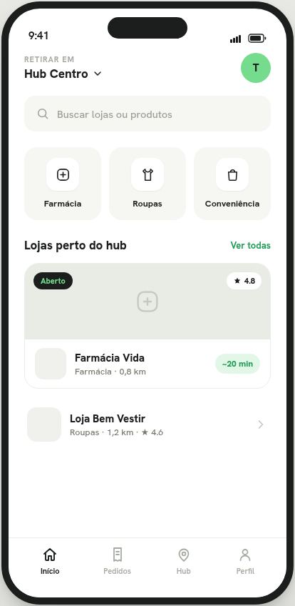
Veja o hub atual, explore categorias e encontre lojas próximas.
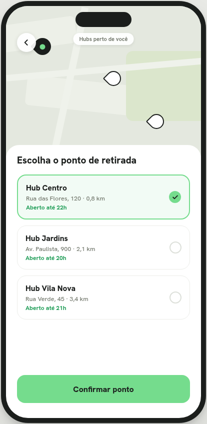
Selecione o ponto de retirada que funciona melhor para sua rotina.
Ao abrir uma loja, navegue pelo catálogo e toque em um produto para ver seus detalhes. Ajuste a quantidade e adicione ao carrinho quando estiver pronto.
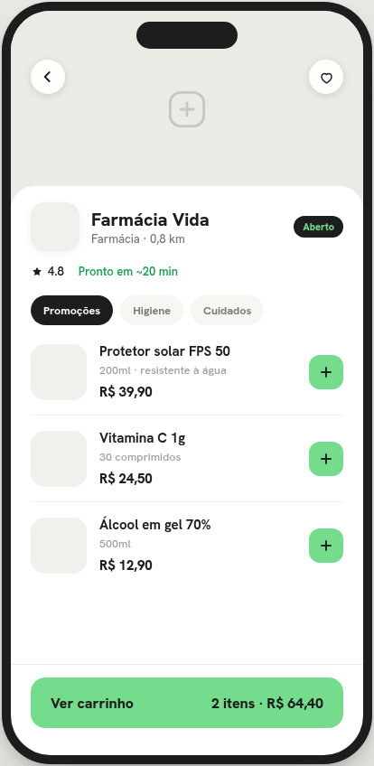
Produtos organizados para você escolher com clareza.
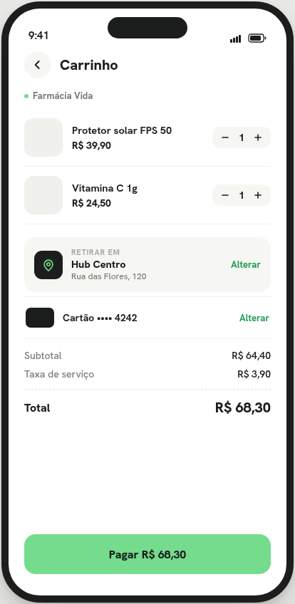
Revise itens, taxas e o total antes de avançar.
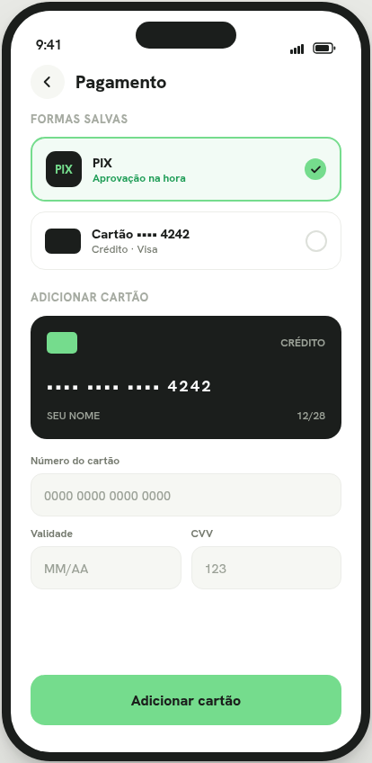
Escolha PIX ou cartão e confirme a compra.
Depois de confirmar a compra, a aba Meus Pedidos concentra o acompanhamento. Ali você vê a etapa atual e sabe quando agir.
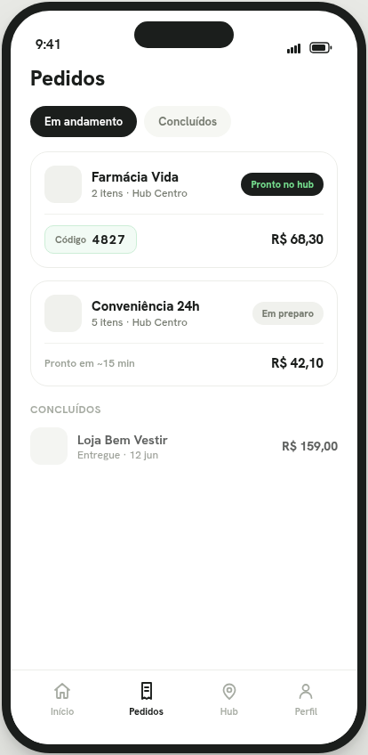
Alterne entre pedidos em andamento e concluídos.
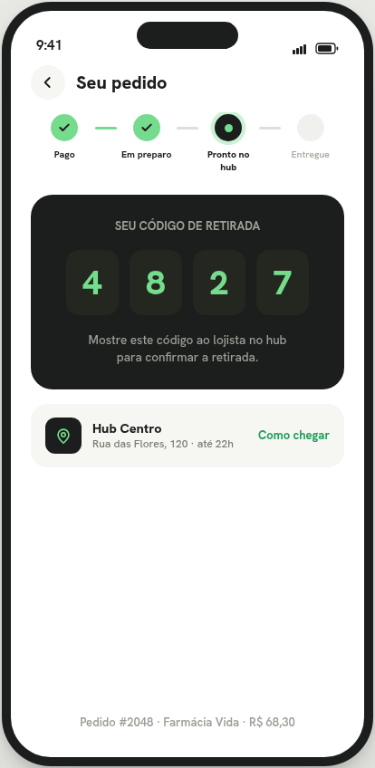
Ao chegar, siga as orientações da tela e apresente o PIN para concluir a retirada.
O app Parceiro reúne os pedidos, catálogo, dados financeiros e perfil da loja. A navegação principal organiza tudo em quatro áreas: Pedidos, Catálogo, Financeiro e Perfil.
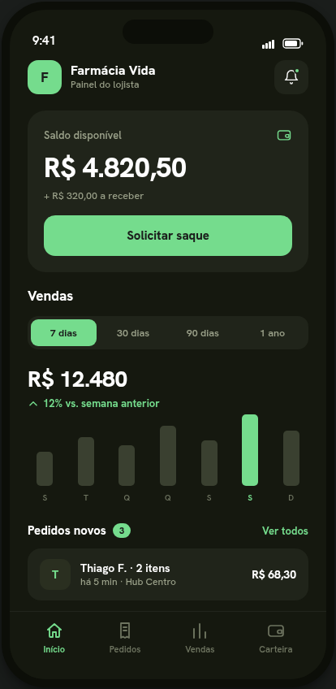
Acompanhe saldo disponível, valores a receber e o resumo de vendas.
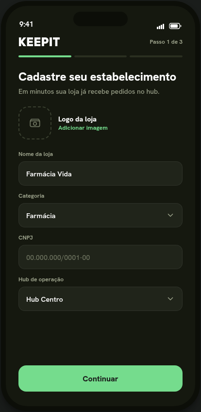
Preencha os dados da operação para apresentar sua loja na plataforma.
Pedidos ativos aparecem na área Pedidos. Cada cartão mostra o status atual e oferece a ação adequada para seguir com a operação.
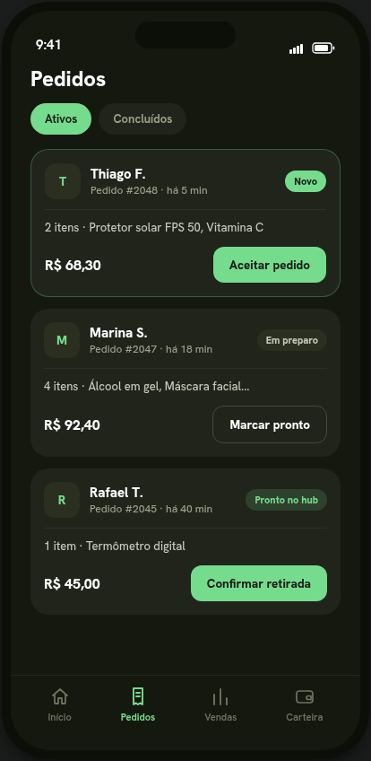
Veja os pedidos que precisam de atenção e acompanhe cada etapa.
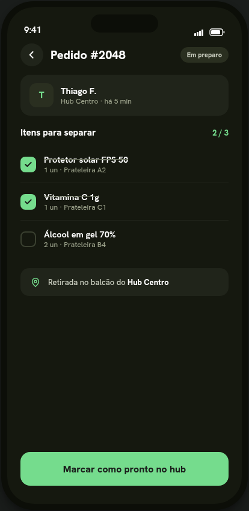
Confira os itens e marque o pedido como pronto.
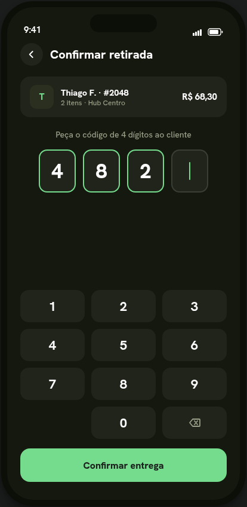
Digite o PIN apresentado pelo cliente para concluir a retirada.
Mantenha produtos, disponibilidade e informações financeiras atualizados para uma operação organizada todos os dias.
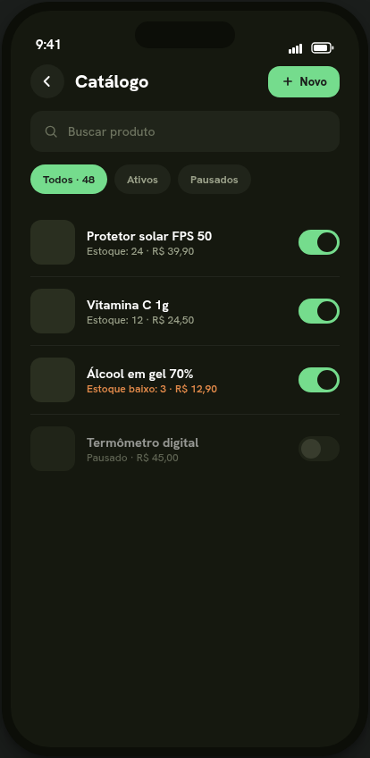
Cadastre, edite e gerencie os produtos que ficam disponíveis para compra.
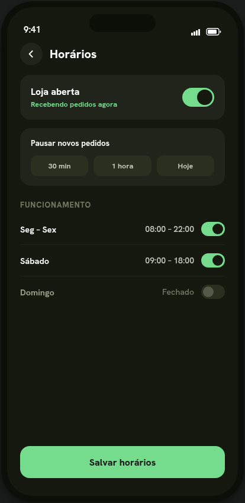
Configure os horários e mantenha a disponibilidade da loja alinhada à operação.
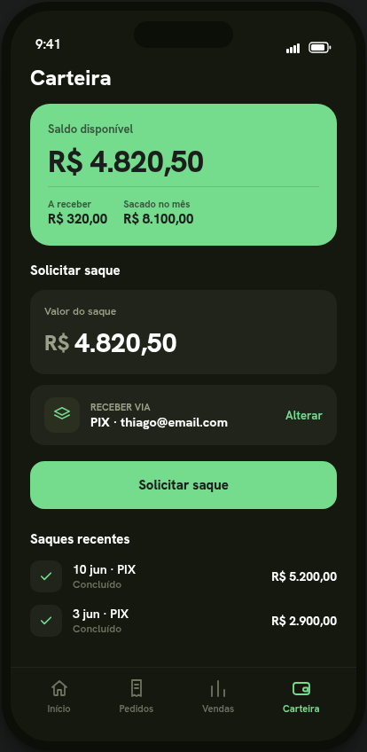
Consulte saldo disponível, valores a receber e organize suas movimentações.
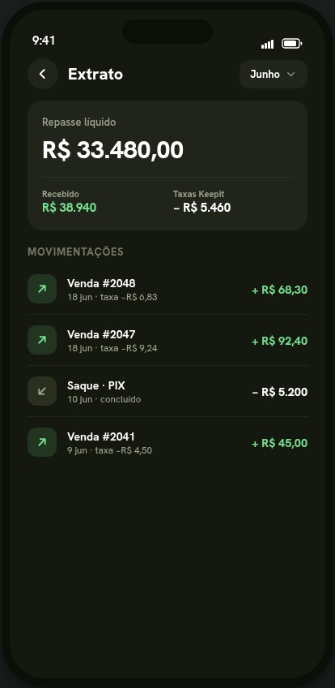
Acompanhe as entradas e saídas da loja com clareza.
O Painel Admin centraliza as rotinas da plataforma. A barra lateral organiza todas as áreas para que cada atividade seja encontrada rapidamente.
Analise os dados do parceiro e conclua a decisão de aprovação ou rejeição.
Cadastre, edite e acompanhe os pontos de retirada da plataforma.
Consulte o histórico, filtre por status e acompanhe detalhes da operação.
As áreas financeiras transformam a movimentação da plataforma em filas claras de acompanhamento e indicadores para a tomada de decisão.
Visualize solicitações pendentes e processe cada caso a partir dos detalhes do pedido.
Acompanhe as solicitações dos parceiros e organize o processamento de cada pagamento.
Consulte GMV, receita Keepit, pedidos e ranking de lojas no período escolhido.
O painel mostra GMV, receita, pedidos, taxa de sucesso e ranking de lojas em um mesmo ambiente.
Use este guia como referência rápida sempre que precisar comprar, preparar uma retirada ou conduzir a operação da Keepit.